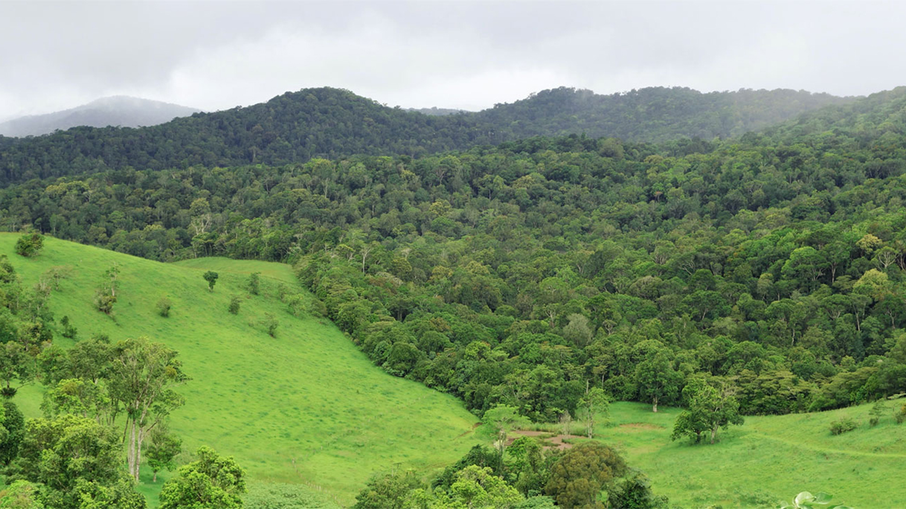
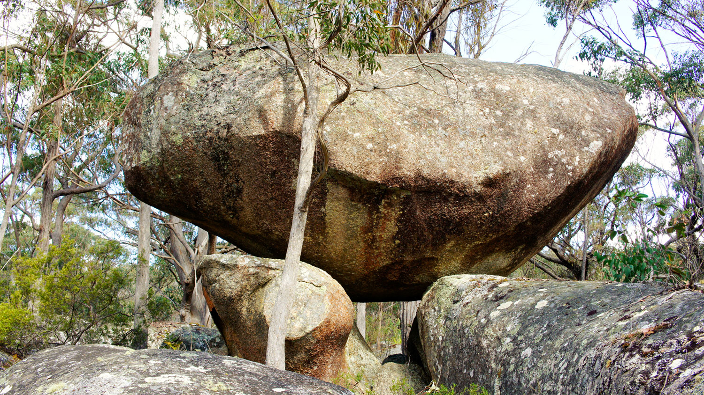
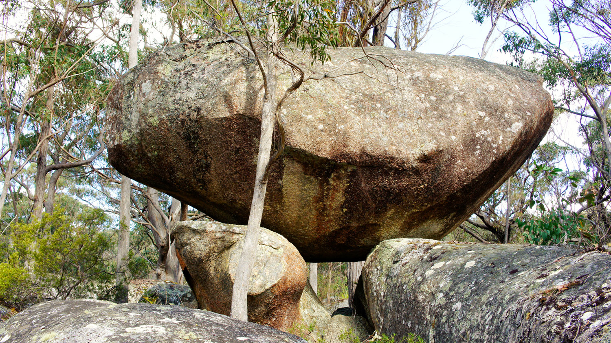

Latest News, January 2017
Second year of 20 million tree plantings underway at Dirrans End
Early 2016 South Endeavour was awarded an $80,000 grant by the Australian Government's 20 Million Trees program for our major rainforest revegetation corridor project at Dirrans End. The grant will cover around one third of the cost of planting and maintaining a minimum of 27,000 trees over the final 8.5 hectares of the corridor. In March/April we planted out the first 1.5 hectares under this project with a further 3.5 hectares to be planted this wet season and the final 3.5 hectares the following wet. Already over a hectare has been planted this year with significant assistance from Conservation Volunteers Australia. While it would normally be too dry to plant at this time, we have a bore and a 60,000 litre water tank which has proved invaluable in watering the trees in. So far these little trees are looking very happy in there new home!
READ MORE
Latest News, February 2017
Start of Reef Trust Gully sediment reduction project on Kings Plains
In mid 2016 South Endeavour was very pleased to be awarded $304,400 in Australian Government Reef Trust funding to embark upon a major project to reduce gully sourced sediment on Kings Plains moving into the Normanby River and thence out to the Great Barrier Reef. There are around 11,000 hectares of highly erodible sodic soil river flats on Kings Plains with around 900 hectares already subject to gully erosion. The project will run for three years and aims to substantially reduce the 33,000 tonnes per annum of sediment from the property going down the river. This will involve:
destocking 11,000 hectares of river flats and associated hill slopes, around 40,000 hectares in total, to allow for the recovery of perennial grasses to help slow the rate of erosion and to help prevent cattle pads turning into gully producing water courses. replanting and seeding of gullies to slow their rate of advance construction of diversion structures around the heads of selected gullies, plus brush structures to impede water flow in the gullies construction of head drop structures in the form of engineered rock shutes for a small number of young gullies with the potential to become major sediment sources in the future and which are uunlikely to be controlled by other means.
READ MORE


 
